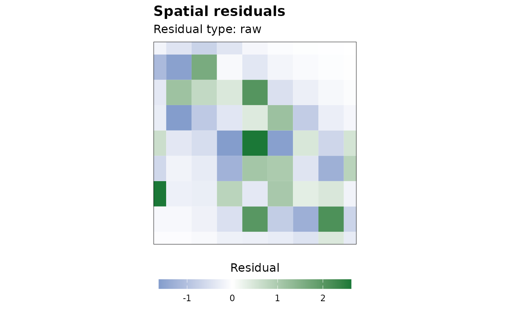
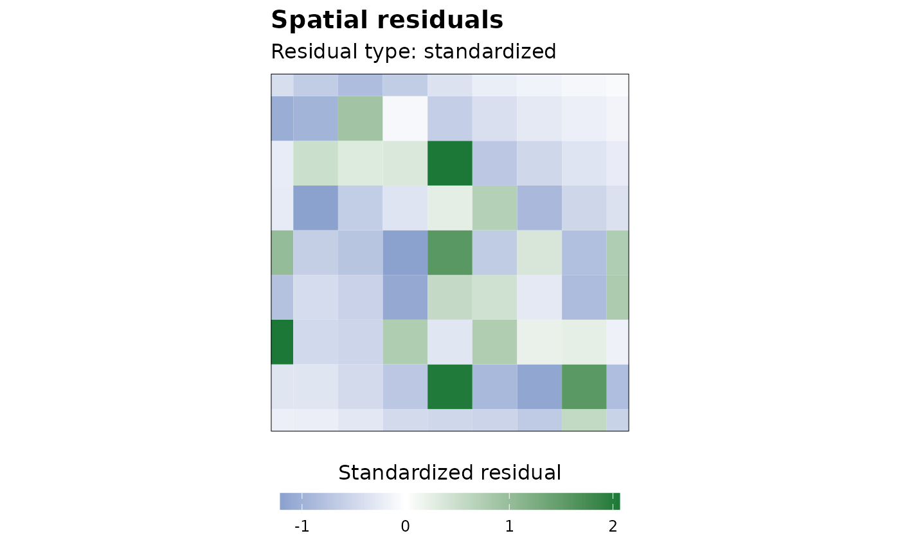

Plots observed minus expected event counts, or a relative or Poisson-standardized version of that residual, on the spatial background grid used by a fitted semi-parametric Hawkes model.
Arguments
- x
An object of class
semihawkes_gof_spatialreturned bygof_spatial_residuals().- type
Type of residual to plot:
"raw"for observed minus expected,"relative"for(observed - expected) / expected, or"standardized"for(observed - expected) / sqrt(expected).- limits
Optional numeric vector of length two giving the colour-scale limits. If
NULL, limits are chosen from the 2nd and 98th residual percentiles.- ...
Additional arguments passed to ggplot2 functions.
Details
Grid cells are calculated on the fitted background grid. For display, cells intersecting the study boundary are clipped to the region polygon; this affects visualisation only, not residual calculation.
Examples
# \donttest{
# A quick fit to one year of the bundled simulated data: a coarse grid, a
# coarse triggering-kernel grid and two EM iterations keep it to a few
# seconds. Real analyses need finer settings and more iterations.
cache_dir <- tempfile("spHawkes_marks_")
fit <- fit_semihawkes(
sim_events, sim_region,
date_col = "date",
end_date = "2022-01-01",
cell_size = 1000,
cache_dir = cache_dir,
trigger_spatial_args = list(x_range = 2000, x_step = 250),
trigger_window_dist = 2000,
n_iter = 2,
verbose = FALSE,
seed = 1
)
#> The modelled study period ends on 2021-12-29, the day after the last event. `end_date` (2022-01-01) is used only to select events and to label outputs.
res <- gof_spatial_residuals(fit)
plot(res)

plot(res, type = "standardized")

# }